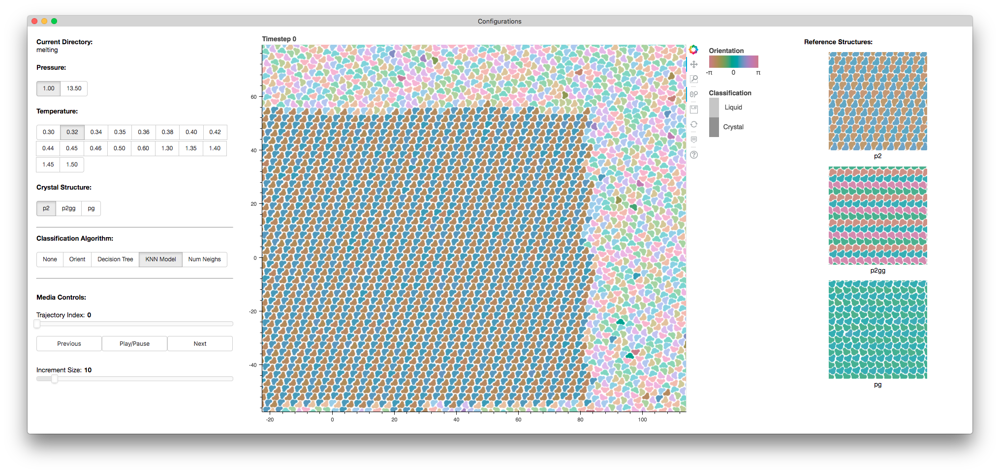

Entry 21¶
Interactive Crystal Melting¶
Malcolm Ramsay
Solid materials comprise nearly everything we interact with, yet we have little theoretical understanding of their formation. I use simulations to research the process of crystal melting to develop a grammar describing the motions that take place. I use 2D particles shaped like Mickey Mouse’s head, which has three possible crystal structures: p2, p2gg and pg — named for their symmetry.
The key feature distinguishing the crystals from a liquid is well defined orientational alignment. To visually emphasise orientational alignment, I encode particle orientation with hue while keeping apparent lightness constant since orientations are equivalent. This orientational encoding reveals the layering of orientational alignment within each of the three crystal structures. Additionally, the order of the crystal contrasts with the randomness of the liquid. In using hue to encode orientation, each of the crystals and the liquid are visually separable.
Knowing the crystal structures can be identified visually, I needed a tool for the automated classification of each structure. This task is perfect for machine learning. To help prevent overfitting of the test dataset, integrated into the visualisation is a tool to compare the accuracy of classification algorithms, which was instrumental in identifying that my first machine learning algorithm was memorising neighbours instead of recognising structure. The particles classified as liquid are lighter than those classified as crystal, having the effect of emphasising crystalline regions which are the focus of my research.
In distinguishing between the liquid and crystal regions, I am able to compare different algorithms as they track the melting of a crystal. The algorithms I am comparing are; Orient which is a typical algorithm in the field, Decision Tree which is a trained scikit-learn decision tree, KNN Model which is a trained scikit-learn K-Nearest Neighbours classifier, and Num Neighs which uses the number of Voronoi neighbours as a classifier. Each algorithm has different classification errors, while the KNN Model provides the most accurate tracking of melting for all crystals.
This visualisation tool is possible because of the amazing work of everyone involved with Bokeh. The Bokeh server provides a simple interface between the visualisation and a python runtime. I have leveraged this interface to allow real time processing of raw datasets; providing an interface to Terabytes of raw simulation data.
The attached image is a screenshot of the figure in action. Instructions for setting up the environment and running the figure are included in the README of the data files.
The data included in the demonstration shows the transition from the crystal not changing at low temperatures, to the melting at higher temperatures. This was chosen to be representative of the functionality of the figure.
Code and data: 1